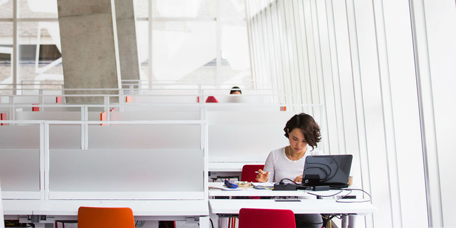
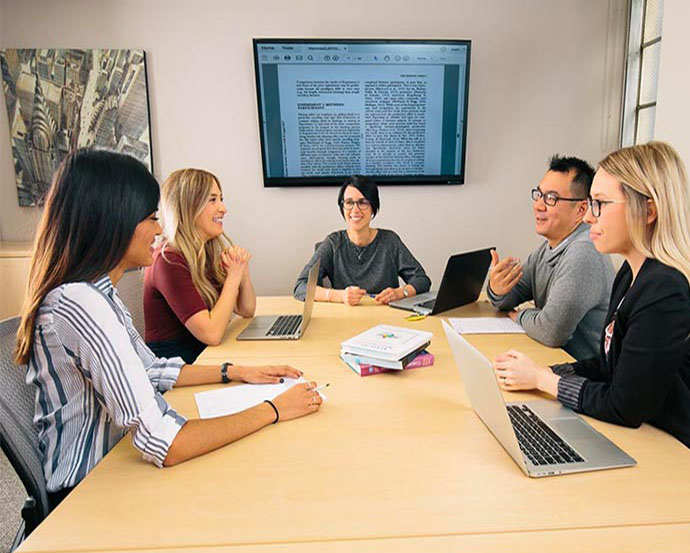
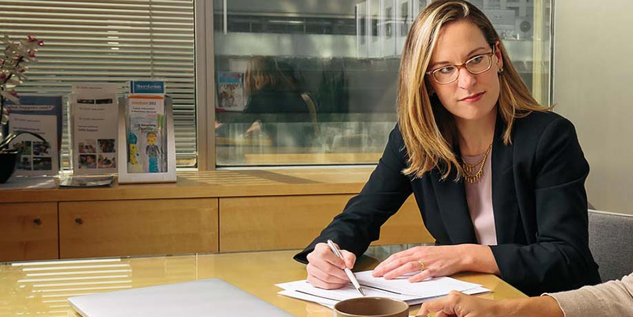

Programs

How to Apply >

Finding Supervisor

Financing Your Studies
Attend Events
Info-Session for The Private and Independent Practice Program at TMU. Register here
You are now in the main content area Open Access Publishing (and Transformative Agreements) Register here
ICCRP Intergenerational Advisory Committee Special Topic Roundtable Discussion. Register here
In Bloom: the Art of Healing. Register here
Mastering Self-Development: Building Habits for Lasting Growth with Najwa Zebian. Register here